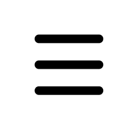

Aici puteti gasi un plan personalizat pentru alimetatie si antrenament!

Ziua 1: Program exercitii pentru pectorali si triceps!
Puteti alege dintre 2 antrenamente!
Antrenamentul 1!
- PECTORALI
-
Impins cu bara la piept din pozitie culcat! 4 serii, intre 8-10
repetari!
-
Fluturari cu gantere din pozitie culcat! 4 serii, intre 8-10 repetari!
- Flotari la ''paralele''! 4 serii, intre 8-10 repetari!
- Impins cu gantere din pozitie inclinat! intre 8-10 repetari!
- TRICEPS
-
Impins cu bara din pozitie culcat! 4 serii, intre 8-10 repetari!
-
Extensii la scripete cu bara dreapta! 4 serii,intre 8-10 repetari!
- Extensii la scripete cu bara ,,V,, 4 serii,intre 8-10 repetari!
Antrenamentul 2!
- PECTORALI
-
Impins cu bara la piept din pozitie culcat! 4 serii, intre 8-10
repetari!
- Fluturari la scripete! 4 serii, intre 8-10 repetari!
-
Impins cu gantere din pozitia declinat! 4 serii,intre 8-10 repetari!
-
Impins cu gantere din pozitia culcat! 4 serii, intre 8-10 repetari!
- TRICEPS
-
Impins cu bara din pozitie culcat! 4 serii, intre 8-10 repetari!
-
Extensii cu bara,,Z,, din pozitia culcat! 4 serii, intre 8-10
repetari!
-
Extensii cu gantera din pozitia sezut,4 serii, intre 8-10 repetari!
Ziua 2: Program pentru Spate si biceps!
Antrenamentul 1!
- SPATE
- Tractiuni la bara! 4 serii, intre 8-10 repetari!
- Ramat cu bara! 4 serii, intre 8-10 repetari!
-
Tractiuni la scripete cu manerul,,V,,! 4 serii, intre 8-10 repetari!
- Indreptari cu bara! 4 serii,intre 8-10 repetari!
- BICEPS
- Flexii cu bara dreapta! 4 serii, intre 8-10 repetari!
- Flexii cu ganterele! 4 serii, intre 8-10 repetar!
- Flexii la scripete cu bara ,,V,,! 4 serii,intre 8-10repetari!
Antrenamentul 2!
- SPATE
- Tractiuni cu bara la scripete! 4 serii, intre 8-10 repetari!
- Ramat cu ganterele! 4 serii, intre 8-10 repetari!
- Extensia spatelui la banca! 4 serii, intre 8-10 repetari!
-
Ridicari ale umerilor cu bara sau gantera! 4 serii, intre 8-10
repetari!
- BICEPS
- Flexii cu bara ,,Z,,! 4 serii, intre 8-10 repetari!
- Tractiuni la bara! 4 serii, intre 8-10 repetari!
- Flexii cu ganterele''hammer''! 4 serii, intre 8-10 repetari!
Ziua 3: Program pentru coapse si gambe!
Antrenamentul 1!
- COAPSE
- Genuflexiuni cu bara! 4 serii, intre 8-10 repetari!
- Fandari gantere! 4 serii, intre 8-10 repetari!
-
Indreptari pentru bicepsul femural! 4 serii, intre 8-10 repetari!
- Extensii cvatriceps la aparat! 4 serii, intre 8-10 repetari!
- GAMBE
- Ridicari pe varfuri cu bara! 4 serii, intre 8-10 repetari!
- Ridicari pe varfuri la aparat! 4 serii, intre 8-10 repetari!
Antrenamentul 2!
- COAPSE
- Genuflexiuni cu bara! 4 serii, intre 8-10 repetari!
- Genuflexiuni la presa! 4 serii, intre 8-10 repetari!
- Indreptari cu bara! 4 serii, intre 8-10 repetari!
- Flexii biceps femural la aparat! 4 serii, intre 8-10 repetari!
- GAMBE
- Ridicari pe varfuri cu ganterele! 4 serii, intre 8-10 repetari!
- Impins la presa pentru gambe! 4 serii, intre 8-10 repetari!
Ziua 4: Program pentu umeri!
Programul 1!
- Presa cu bara! 4 serii, intre 8-10 repetari!
- Ridicari laterale cu ganterele! 4 serii, intre 8-10 repetari!
- Ridicari frontale cu ganterele! 4 serii, intre 8-10 repetari!
- Presa Arnold! 4 serii, intre 8-10 repetari!
Antrenamentul 2!
- Presa cu gantere! 4 serii, intre 8-10 repetari!
- Fluturari laterale cu gantere! 4 serii, intre 8-10 repetari!
-
Ridicari laterale-frontale cu ganterele! 4 serii, intre 8-10 repetari!
- Ridicari frontale cu bara! 4 serii, intre 8-10 repetari!
SUPLIMENTE:
Suplimente pentru masa musculara!
GAINERE!
- GFX-8
- Jumbo Mass!
- Creatina!
- Gigant Pro Mass!
PROTEINE!
- Pro Whey
- Whey Protein
- BEEF Protein
- Gold Whey
Suplimente pentru slabit!
Arzatoare de grasimi!
- L-Carnitina
- Lipox
- Apetite-control
- Thermo-Shape
ALIMENTE!
Alimente pentru masa musculara!
CARBOHIDRATI!
- Orez
- Paste Fainoase
- Painea
- Cartofi
PROTEINE!
- Carne
- Lapte
- Branza
- Oua
- Fasole
Alimente pentru slabit!
PROTEINE!
- Carne de pui
- Carne de peste
ALIMENTE BOGATE IN FIBRE!
- Avocado
- Pere
- Zmeura
- Dovlecel
- Varza
- Conopida
- Linte
Antrenament:
Pentru masa musculara!
- Se vor folosi aceleasi exrcitii ca in Tagul "Exercice"!
- Repetarile vor fi intre 6-8, cu greutate mai mare!
- Se vor evita exercitiile de tip "Cardio"
Pentru Slabit!
- Se vor folosi aceleasi exrcitii ca in Tagul "Exercice"!
- Repetarile vor fi intre 12-15, cu greutate mai mica!
-
Se va alerga la banda ,sau aer liber, de 2-3 ori pe saptamana,cel
putin 40 de minute!
Alimentatie!
Pentru masa musculara!
- Mesele vor fi intre 5-6 pe zi!
- Carbohidrati (orez,cartofi,paste fainoase) la fiecare masa!
- Proteine, sursa animala sau vegetala la fiecare masa!
- Incercarea de a manca in fiecare zi la ore fixe!
Pentru Slabit!
- Mesele vor fi intre 4-5 pe zi!
-
Se exclud treptat carbohidratii, pana ajungi la o singura masa cu
carbohidrati!
- In locul carbohidratilor se vor consuma legume!
- Va trebi o axare mai mare pe sursa de proteina animala!
Antrenament:
Pentru masa musculara!
- Se vor folosi aceleasi exrcitii ca in Tagul "Exercice"!
- Repetarile vor fi intre 8-10, cu greutate mai mare!
- Se vor evita exercitiile de tip "Cardio"
Pentru Slabit!
- Se vor folosi aceleasi exrcitii ca in Tagul "Exercice"!
- Repetarile vor fi intre 15-17, cu greutate mai mica!
-
Se va alerga la banda ,sau aer liber, de 4-5 ori pe saptamana,cel
putin 60 de minute!
Alimentatie!
Pentru masa musculara!
- Mesele vor fi intre 4-5 pe zi!
- Carbohidrati (orez,cartofi,paste fainoase) la fiecare masa!
- Proteine, sursa animala sau vegetala la fiecare masa!
- Incercarea de a manca in fiecare zi la ore fixe!
Pentru Slabit!
- Mesele vor fi intre 4-5 pe zi!
-
Se exclud treptat carbohidratii, pana ajungi la o singura masa cu
carbohidrati!
- In locul carbohidratilor se vor consuma legume!
- Va trebi o axare mai mare pe sursa de proteina animala!
Antrenament!
Pentru Slabit!
- Se vor folosi aceleasi exrcitii ca in Tagul "Exercice"!
- Repetarile vor fi intre 17-20, cu greutate mai mica!
- Pauza dintre exercitii va fi de cel mult 30-45 de secunde!
-
Se va alerga sau se va merge "pas alert" la banda ,sau aer liber, de
6-7 ori pe saptamana,cel putin 80 de minute!
Alimentatie!
Pentru Slabit!
- Mesele vor fi intre 3-4 pe zi!
-
Se exclud treptat carbohidratii, pana nu se va mai consuma decat
intre 50-75g de carbohidrati pe zi!
- In locul carbohidratilor se vor consuma legume!
-
Va trebi o axare mai mare pe sursa de proteina animala si vegetala!